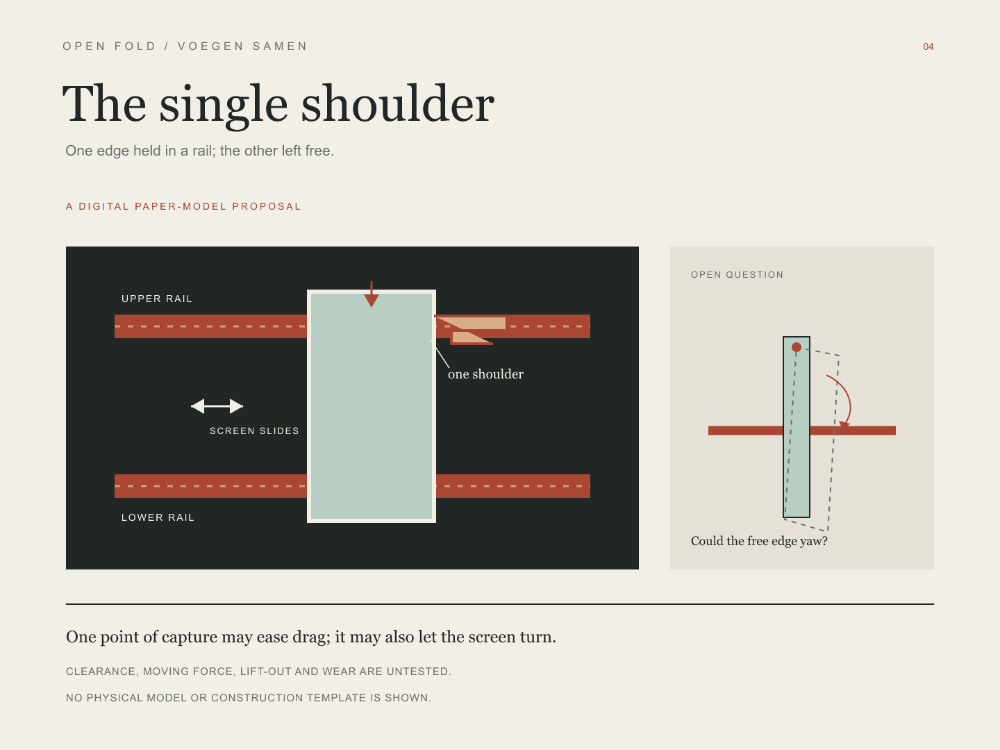
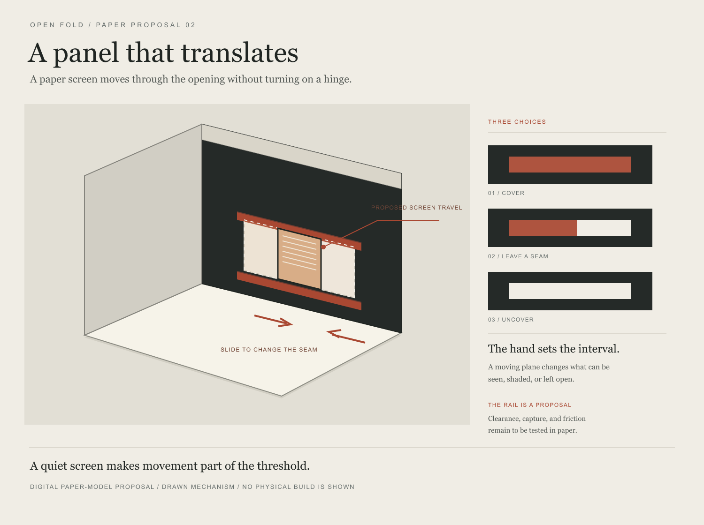

One edge is held by a rail; the free edge may turn.
Enter the workRooms for
the arriving.
Paper models about thresholds, light, and the small freedoms a room can give the person who enters.


A notched spine lets the screen pause between closed and open.
Enter the work
A quiet screen makes movement part of the threshold.
Enter the work
A small room to pause, with an opening its visitor can set.
Enter the work